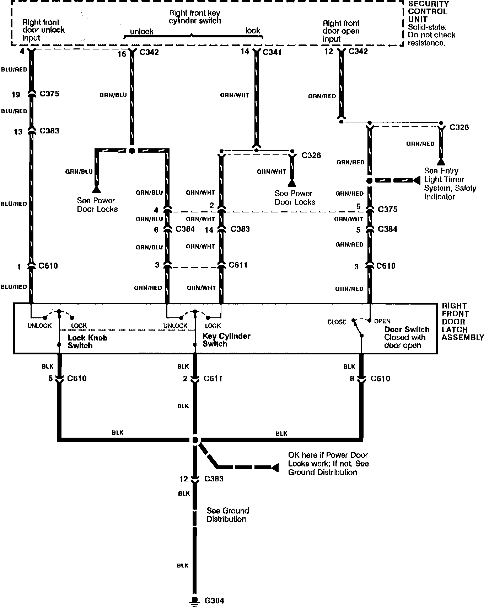

Operation CHARM
: Car repair manuals for everyone.
Home
>>
Acura
>>
1992
>>
Legend Sedan V6-3206cc 3.2L SOHC FI
>>
Repair and Diagnosis
>>
Accessories and Optional Equipment
>>
Antitheft and Alarm Systems
>>
Diagrams
>>
Electrical Diagrams
>>
7 of 11
7 of 11
Theft Deterrent: Right Front Door Input:
